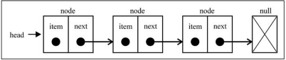
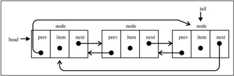

链表
要存储多个元素，数组（或列表）可能是最常用的数据结构。基本每种语言都实现了数组。这种数据结构非常方便，提供了一个便利的[]语法来访问它的元素。然而，这种数据结构有一个缺点：（在大多数语言中）数组的大小是固定的，从数组的起点或中间插入或移除项的成本很高，因为需要移动元素（尽管我们已经学过的JavaScript的array类方法可以帮我们做这些事，但背后的情况同样是这样）。
链表存储有序的元素集合，但不同于数组，链表中的元素在内存中并不是连续放置的。每个元素由一个存储元素本身的节点和一个指向下一个元素的引用（也称指针或链接）组成。下图展示了一个链表的结构：

相对于传统的数组，链表的一个好处在于，添加或移除元素的时候不需要移动其他元素。然而，链表需要使用指针，因此实现链表时需要额外注意。
数组的另一个细节是可以直接访问任何位置的任何元素，而要想访问链表中间的一个元素，需要从起点（表头）开始迭代列表直到找到所需的元素。
现实中也有一些链表的例子。比如：一列火车是由一系列车厢（也称车皮）组成的。每节车厢或车皮都相互连接。你很容易分离一节车皮，改变它的位置，添加或移除它。
创建链表
let LinkedList = (function () {
class Node {
constructor(el, next = null) {
this.el = el;
this.next = next;
}
getElement() {
return this.el;
}
getNext() {
return this.next;
}
setNext(next) {
this.next = next;
}
}
let length = 0,
head = null;
return class {
append(el) {
let node = new Node(el),
current = null;
if (!head) {
head = node;
} else {
current = head;
while (current.getNext()) {
current = current.getNext();
}
current.setNext(node);
}
length++;
}
insert(position, el) {
let newNode = new Node(el),pre=null,current = head,index=0;
position = Math.max(0,Math.min(length,position));
if(position===0){
newNode.setNext(current);
head = newNode;
}else{
while(index++<position){
pre = current;
current = current.getNext();
}
pre.setNext(newNode);
newNode.setNext(current);
}
length++;
}
removeAt(position) {
let _position = Math.max(0, Math.min(length-1, position)); //保证无论position输入的数字是否为越界，都会在区域内。
let index = 0,
pre = null,
current = head;
if (length > 0) {
if (_position === 0) {
head = current.getNext();
} else {
while (index++ < _position) {
pre = current;
current = current.getNext();
}
pre.setNext(current.getNext());
}
length--;
return current.getElement();
}
return null;
}
remove(el) {
let index = this.indexOf(el);
if(index==-1) return ;
return this.removeAt(index);
}
indexOf(el) {
let index = -1,pre=null,current = head;
if(length>0){
for(let i=0;i<=length;i++){
if(current.getElement()===el){
index = i;
break;
}
pre = current;
current = current.getNext();
}
}
return index;
}
isEmpty() {
return length===0;
}
size() {
return length;
}
getHead() {
return head;
}
toString() {
}
print() {
}
}
})()
双向链表
链表有多种不同的类型，双向链表则是其中一种。双向链表和普通链表的区别在于，在链表中，一个节点只有链向下一个节点的链接，而在双向链表中，链接是双向的：一个链向下一个元素，另一个链向前一个元素，如下图所示：
双向链表提供了两种迭代列表的方法：从头到尾，或者反过来。我们也可以访问一个特定节点的下一个或前一个元素。在单向链表中，如果迭代列表时错过了要找的元素，就需要回到列表起点，重新开始迭代。这是双向链表的一个优点。
let DoubleLinkedList = (function(){
class Node {
constructor(el,prev=null,next=null){
this.element = el;
this.prev = prev;
this.next = next;
}
}
let length = 0,head = null, tail = null;
return class {
insert(position,el){
let node = new Node(el),index=0,current = head,prev = null,next=null,index=0;
position = Math.max(0,Math.min(length,position));
if(position===0){
if(!head){
head = node;
tail = node;
}else{
node.next = head;
head.prev = node;
head = node;
}
}else if(position===length){
tail.next = node;
node.prev = tail;
tail = node;
}else{
if(position<Math.floor(index/2)){
while(index++<position){
prev = current;
current = current.next;
}
}else{
index = length;
current = tail;
while(index--<position){
next = current;
current = current.prev;
}
}
node.next = current;
prev.next = node;
current.prev = node;
node.prev = prev;
}
length ++;
}
removeAt(position){
if(length===0) return ;
position = Math.max(0,Math.min(length-1,position));
let index = 0;
let current = head,prev=null;
if(index===0){
head = current.next;
if(length===1){
tail=null;
}else{
head.prev = null
}
}else if(position===length-1){
current = tail;
tail = current.prev;
}else{
while(index++<position){
prev = current;
current = current.next;
}
prev.next = current.next;
current.next.prev = prev;
}
length--;
return current.element;
}
}
})
循环链表
循环链表可以像链表一样只有单向引用，也可以像双向链表一样有双向引用。循环链表和链表之间唯一的区别在于，最后一个元素指向下一个元素的指针（tail.next）不是引用null，而是指向第一个元素（head），如下图所示。

双向循环链表有指向head元素的tail.next，和指向tail元素的head.prev。

代码以后补上。